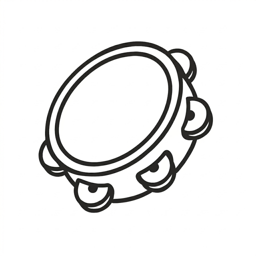

Música e baile tradicional
Unha asociación de Santiago de Compostela. Pandeireta e canto, un curso de baile e foliadas.
Faite sociaActividades
-
Pandeireta e canto
María Raxeta
O grupo de pandeireta e canto tradicional da asociación. Toca en foliadas, romarías, seráns e programacións culturais.
-
Baile tradicional
Curso de baile
Unha sesión á semana, de outubro a xuño, en Santiago de Compostela.
Prazas cubertas · curso 2026/2027
-

Aplicación
«a eito!»
Un cancioneiro persoal no móbil: garda as túas coplas, letras e gravacións e consúltaas sen cobertura. É de balde.
Foliadas
Habemos facer algún evento, cando lle cadre e haxa janas. Ha ser cutre mais apañado.
Avisamos por correo ás persoas socias.
Faite socia
As convocatorias de foliadas, seráns e obradoiros mandámolas por correo ás persoas socias antes de difundilas nas redes.
AsóciateAlta
0 €
- Cota anual
- 5 €, desde 2027. En 2026 non se cobra.
- Para quen
- Persoas maiores de idade.
A asociación
A Asociación Xente de Fóra é unha entidade sen ánimo de lucro con sede en Santiago de Compostela. Os seus fins son a cultura galega, o patrimonio cultural inmaterial (en especial a música, o baile e o canto tradicionais), a lingua galega e as actividades culturais e de lecer para a mocidade.
O nome di de onde vimos, non quen pode entrar: somos xente de fóra de Santiago (case todos) que vive en Compostela. Para que non nos chamen xenófobos temos algún da capital tamén.
- Nome legal
- ASOCIACIÓN XENTE DE FÓRA
- NIF
- G05571401
- Rexistro
- Rexistro Central de Asociacións de Galicia, n.º 2026/28733-1
- Sede
- Santiago de Compostela
- Correo
- info@xentedefora.gal